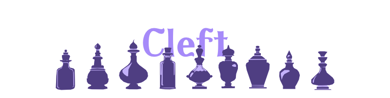
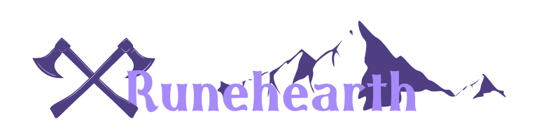

<!DOCTYPE html>
<html = style="height: 100%;">
  <head>
    <title>Daria Map</title>
    <meta name="viewport" content="width=device-width, initial-scale=1.0">
    <link rel="stylesheet" href="scripts/leaflet.css">
    <script src="scripts/leaflet.js"></script>
    <link rel="stylesheet" href="full-screen/Control.FullScreen.css" />
    <script src="full-screen/Control.FullScreen.js"></script> 
  </head>
  
  <body style="height: 100%;margin: 0;">
    <div id="map" style="width: 100%; height: 100%; background: #000000;"></div>
    <script type="text/javascript">
  //Creating the Map
  var map = L.map('map', {
        crs: L.CRS.Simple,
        minZoom: -3,
        maxZoom: -1,
        fullscreenControl: true,
        });
        /* Instead of a tile layer, use a bitmap image */
        var bounds = [[0,0], [6204,5000]];
        var imageUrl = 'map/The Sunfall Coast.jpg';
        L.imageOverlay(imageUrl, bounds).addTo(map);
        map.fitBounds(bounds);
  //Markers      
  //      var marker = L.marker([51.5, -0.09]).addTo(map); 
  //          marker.bindPopup('Example Marker').openPopup();
  //                                            ^ .openPopup() will open the popup when the map loads

//Define Markers
     //City Circles
      var circle = L.circle([5040, 744], {color: 'transparent', fillColor: '#f03', fillOpacity: 0, radius: 250}).addTo(map);      
/*      
    //Factions
      //Amber Sun
      var amberSun = L.icon({
        iconUrl: 'assets/factions/ambersun.png', iconSize: [30, 30]});
      //Cobalt College
      var cobaltCollege = L.icon({
        iconUrl: 'assets/factions/cobaltcollege.png', iconSize: [30, 30]});
      //Emberspine
      var emberspine = L.icon({
        iconUrl: 'assets/factions/emberspine.png', iconSize: [30, 30]});
      //Emerald Hunters
      var emeraldHunters = L.icon({
        iconUrl: 'assets/factions/emeraldhunters.png', iconSize: [30, 30]});
      //Night Vigil
      var nightVigil = L.icon({
        iconUrl: 'assets/factions/nightvigl.png', iconSize: [30, 30]});
      //Silverthroats
        var silverThroats = L.icon({
          iconUrl: 'assets/factions/silverthroat.png', iconSize: [30, 30]});
      //Sleep Syndicate
      var sleepSyndicate = L.icon({
        iconUrl: 'assets/factions/sleepsyndicate.png', iconSize: [30, 30]});
      //Wayward Path
      var waywardPath = L.icon({
        iconUrl: 'assets/factions/waywardpath.png', iconSize: [40, 40]});
*/
//City Shapes
        //Black Crag
          circle.bindPopup(
            '<a href= "https://daria.bpbarwick.com/Campaign-Guide/Black-CragCG" target="_parent">  </a> <p><i>people of dogs and plunder</i></p> <p>Raiders of the Saltwash Sea, lovers of canines, rugged folk from the north.</p>'
          );
        //Briarport
        var circle = L.circle([3688, 2744], {
          color: 'transparent',
          fillColor: '#f03',
          fillOpacity: 0,
          radius: 250
        }).addTo(map);
          circle.bindPopup(
            '<a href= "https://daria.bpbarwick.com/Campaign-Guide/BriarportCG/" target="_parent">  </a> <p><i>city of bells and music</i></p> <p>Major trade port known for cliffside views, flourishing trade, and the Moment of Song every midday.</p>'
            );
        //Cleft
        var circle = L.circle([4614, 3872], {
          color: 'transparent',
          fillColor: '#f03',
          fillOpacity: 0,
          radius: 250
        }).addTo(map);
          circle.bindPopup(
            '<a href= "https://daria.bpbarwick.com/Campaign-Guide/CleftCG/" target="_parent">  </a> <p><i>broken by magic, now a place for research</i></p> <p>A small inland city was once a normal farming town until the experiments of a dodgy wizard drew on the wild magics deep in the world. </p>'
          );
        //Luminar
        var circle = L.circle([5944, 2520], {
          color: 'transparent',
          fillColor: '#f03',
          fillOpacity: 0,
          radius: 250
        }).addTo(map);
          circle.bindPopup(
            '<a href= "https://daria.bpbarwick.com/Campaign-Guide/LuminarCG/" target="_parent">  </a> <p><i>a single light in a dark land</i></p> <p>Surrounded by the Evernight, Luminar illuminates itself to keep nightmares at bay.</p>'
          );
        //Ma Rida
        var circle = L.circle([992, 224], {
          color: 'transparent',
          fillColor: '#f03',
          fillOpacity: 0,
          radius: 250
        }).addTo(map);
          circle.bindPopup(
            '<a href= "https://daria.bpbarwick.com/Campaign-Guide/Ma-RidaCG/" target="_parent">  </a> <p><i>the green city that could use some weeding</i></p> <p>Once dominant in all but the north of the Saltwash Sea, the capital of the Emerald Empire is now a crumbling bed of corruption and opulence.</p>'
            );
        //Rimerock
        var circle = L.circle([5336, 3696], {
          color: 'transparent',
          fillColor: '#f03',
          fillOpacity: 0,
          radius: 250
        }).addTo(map);
          circle.bindPopup(
            '<a href= "https://daria.bpbarwick.com/Campaign-Guide/RimerockCG/" target="_parent">  </a> <p><i>city of gilded rust</i></p> <p>Rimerock is a sprawling coastal port city carved into the cliffs, battered by wind and rain, and twisted by class struggle.</p>'
            );
        //Runehearth
        var circle = L.circle([680, 4512], {
          color: 'transparent',
          fillColor: '#f03',
          fillOpacity: 0,
          radius: 250
        }).addTo(map);
          circle.bindPopup(
            '<a href= "https://daria.bpbarwick.com/Campaign-Guide/Guardian-Mountain-ClansCG/" target="_parent">  </a> <p><i>cling to survive, unite to flourish</i></p> <p>A place of hardship, outcasts, and strength where the Guardian Mountains and the Wastes meet.</p>'
          );
        //Watcher's Gate
        var circle = L.circle([1996, 2338], {
          color: 'transparent',
          fillColor: '#f03',
          fillOpacity: 0,
          radius: 250
        }).addTo(map);
          circle.bindPopup(
            '<a href= "https://daria.bpbarwick.com/Campaign-Guide/Watchers-GateCG/" target="_parent">  </a> <p><i>the ever-changing city</i></p> <p>Built upon moving islands, it is home to the Cobalt College, and rumored to hide more than one “liberated” dragon horde beneath its streets.</p>'
            );
        //Wesmar
        var circle = L.circle([3488, 1008], {
          color: 'transparent',
          fillColor: '#f03',
          fillOpacity: 0,
          radius: 250
        }).addTo(map);
          circle.bindPopup(
            '<a href= "https://daria.bpbarwick.com/Campaign-Guide/WesmarCG/" target="_parent">  </a> <p><i>conquerors of the sea</i></p> <p>Most advanced sailors in the Saltwash Sea, the Wesmarians link the Sunfall Coast with the lands to the west. Despite their many wars with the Skaldians, their island is considered a utopia by many.</p>'
          );
/*          
//Markers
    //Factions
        //Amber Sun
        var marker = L.marker([4726, 4104], {icon: amberSun}, {title: "Amber Sun"}).addTo(map); 
        marker.bindPopup('Amber Sun'); 
        marker.bindTooltip("Amber Sun");
        //Cobalt College
        var marker = L.marker([1872, 2512], {icon: cobaltCollege}, {title: "Cobalt College"}).addTo(map); 
        marker.bindPopup('Cobalt College'); 
        marker.bindTooltip("Cobalt College");
        //Emberspine
        var marker = L.marker([1776, 2216], {icon: emberspine}, {title: "Emberspine Trading Company"}).addTo(map); 
        marker.bindPopup('Emberspine Trading Company'); 
        marker.bindTooltip("Emberspine Trading Company");
        //Emerald Hunters
        var marker = L.marker([1072, 2328], {icon: emeraldHunters}, {title: "Emerald Hunters"}).addTo(map); 
        marker.bindPopup('Emerald Hunters'); 
        marker.bindTooltip("Emerald Hunters");
        //Night Vigil
        var marker = L.marker([5384, 3952], {icon: nightVigil}, {title: "Night Vigil"}).addTo(map); 
        marker.bindPopup('Night Vigil'); 
        marker.bindTooltip("Night Vigil");
        //Silverthroats
        var marker = L.marker([1880, 2064], {icon: silverThroats}, {title: "Silverthroats"}).addTo(map); 
        marker.bindPopup('Silverthroats'); 
        marker.bindTooltip("Silverthroats");
        var marker = L.marker([3712, 2976], {icon: silverThroats}, {title: "Silverthroats"}).addTo(map); 
        marker.bindPopup('Silverthroats'); 
        marker.bindTooltip("Silverthroats");
        var marker = L.marker([5072, 3600], {icon: silverThroats}, {title: "Silverthroats"}).addTo(map); 
        marker.bindPopup('Silverthroats'); 
        marker.bindTooltip("Silverthroats");
        //Sleep Syndicate
        var marker = L.marker([5200, 1008], {icon: sleepSyndicate}, {title: "Sleep Syndicate"}).addTo(map); 
        marker.bindPopup('Sleep Syndicate'); 
        marker.bindTooltip("Sleep Syndicate");
        //Wayward Path
        var marker = L.marker([2032, 3704], {icon: waywardPath}, {title: "Wayward Path"}).addTo(map); 
        marker.bindPopup('Wayward Path'); 
        marker.bindTooltip("Wayward Path");
*/
/*//Coordinate Finder        
        var popup = L.popup();
        function onMapClick(e) {
            popup
                .setLatLng(e.latlng)
                .setContent(e.latlng.toString())
                .openOn(map);
        }
       map.on('click', onMapClick);
        map.setMaxBounds(imageBounds);

    var marker = L.marker([0, 0], {
      draggable: true,
    }).addTo(map);
    marker.bindPopup('LatLng Marker').openPopup();
    marker.on('dragend', function(e) {
      marker.getPopup().setContent(marker.getLatLng().toString()).openOn(map);
    });
*/
    </script>
  </body>
</html>